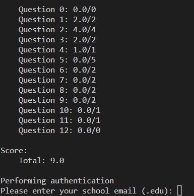
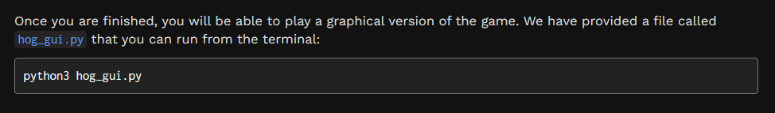
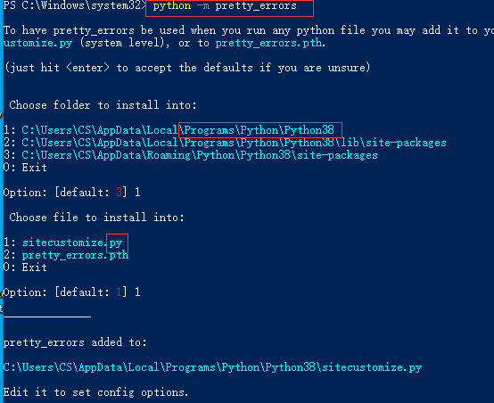
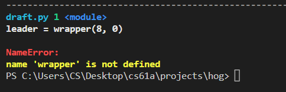
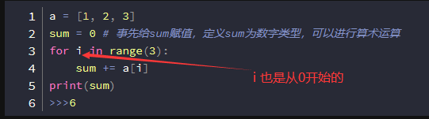
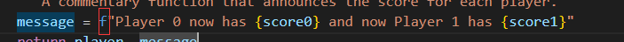

project 1 Hog
Phase1完成
备忘
Interesting
好优化的看bug包
conda和git
- 仍然不会用github,git的安装和我之前一样，就是使用自己的IDE打开，要选这个
- 然后conda的话，一直默认就好，它默认也是让我们自己配置路径，内置一个python，原来的python可以留着
- 清华开源软件站在链接，这个下载anaconda快，其他还不会用
- 在git bash激活anaconda的python，有提示 anaconda init cmd.exe/bash
- 出现bash字样就是成功
- conda install 库名
- conda的python可以使用pip install 库,可以一起管理，但是单独的cmd 的pip就不能一起管理
- 想用github？用到再说吧
- C:\ProgramData\Anaconda3 + Library + Script 加入 环境变量的系统变量
- 安装本地包：C:\ProgramData\Anaconda3\Libs\site-packages tar.gz解压两层，删除版本号放这儿，在Anaconda3界面打开powershell（管理员），conda install --use-local 绝对路径
- conda的一些使用方法
链接
一些语句，看了知道，不看死想也想不到
- 
- 新参数必须出现在旧参数后面
- in this form 
- logging安装不了就算了傻逼Python2的包